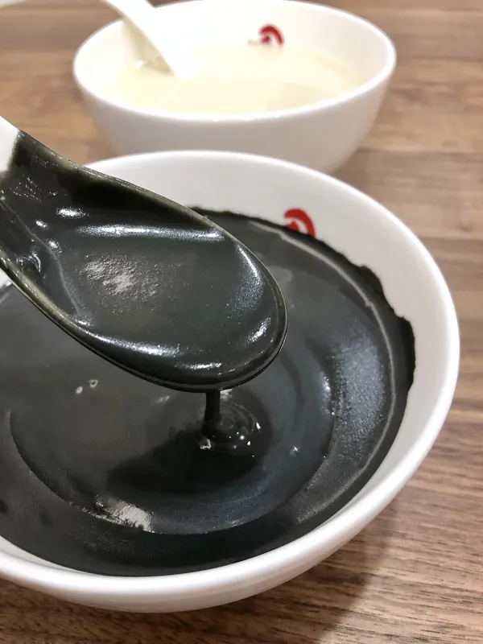
黑芝麻糊
黑芝麻糊成品
作者：bryan... from Taipei, Taiwan · 原文件与来源 · CC BY-SA 2.0

缩小至不超过1000×800像素，转为WebP；页面按容器裁切显示
照片已缩小并转为WebP；图像派生物沿用下列逐图原许可。实拍仅展示外观，摆盘、配料、做法及品种可能不同。食材参考明确不代表成品；作者不为本站背书。
核验日期：2026-11-03。完整来源清单（JSON）

黑芝麻糊成品
作者：bryan... from Taipei, Taiwan · 原文件与来源 · CC BY-SA 2.0
缩小至不超过1000×800像素，转为WebP；页面按容器裁切显示
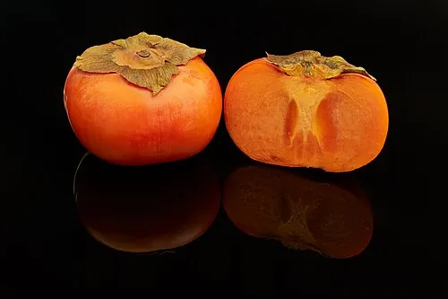
富有柿实拍；不能证明经霜，非霜打成品
作者：Frank Schulenburg · 原文件与来源 · CC BY-SA 4.0
缩小至不超过1000×800像素，转为WebP；页面按容器裁切显示
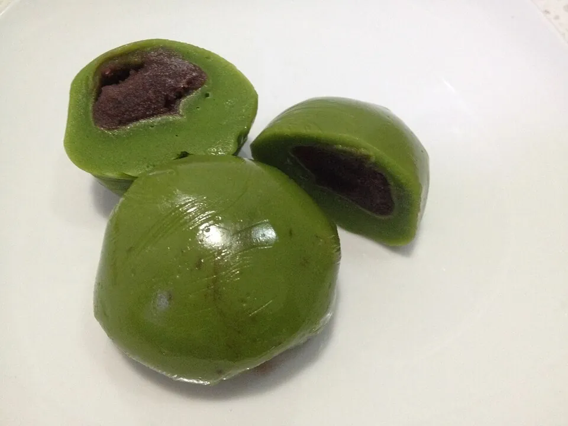
青团成品
作者：Vtorok · 原文件与来源 · CC BY-SA 4.0
缩小至不超过1000×800像素，转为WebP；页面按容器裁切显示
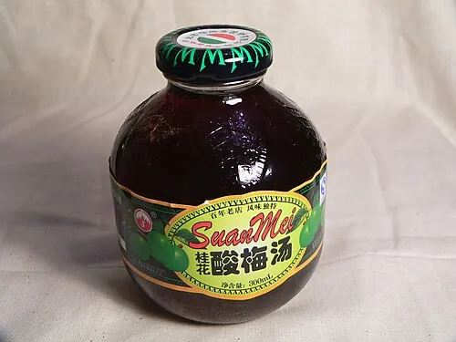
瓶装酸梅汤参考；非本食谱自制成品，不能证明冰镇状态
作者：用心阁/Yongxinge · 原文件与来源 · CC BY-SA 3.0
缩小至不超过1000×800像素，转为WebP；页面按容器裁切显示
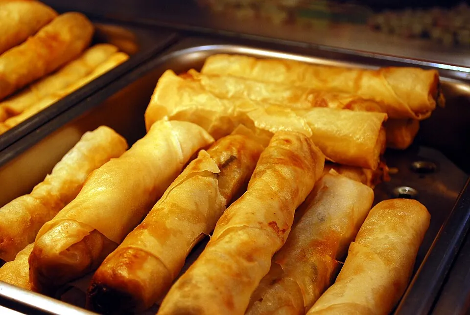
炸春卷成品
作者：Donna Benjamin · 原文件与来源 · CC BY-SA 2.0
缩小至不超过1000×800像素，转为WebP；页面按容器裁切显示
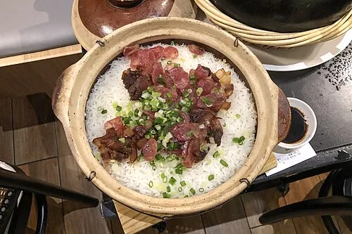
腊味煲仔饭成品
作者：N509FZ · 原文件与来源 · CC BY-SA 4.0
缩小至不超过1000×800像素，转为WebP；页面按容器裁切显示
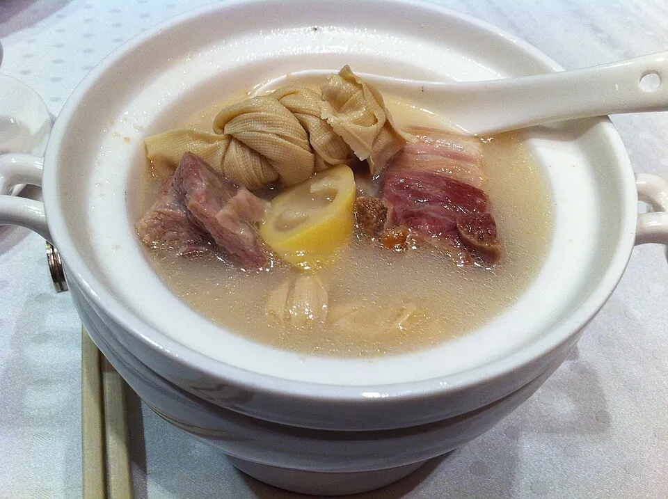
腌笃鲜成品；笋的季节无法由照片确认
作者：N509FZ · 原文件与来源 · CC BY-SA 4.0
缩小至不超过1000×800像素，转为WebP；页面按容器裁切显示
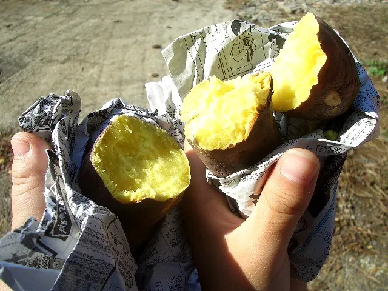
石烤番薯成品
作者：Kanko* · 原文件与来源 · CC BY 2.0
缩小至不超过1000×800像素，转为WebP；页面按容器裁切显示
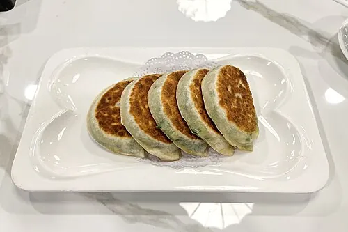
韭菜盒子成品
作者：N509FZ · 原文件与来源 · CC BY-SA 4.0
缩小至不超过1000×800像素，转为WebP；页面按容器裁切显示
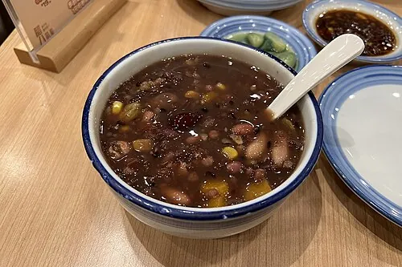
腊八粥成品
作者：N509FZ · 原文件与来源 · CC BY-SA 4.0
缩小至不超过1000×800像素，转为WebP；页面按容器裁切显示
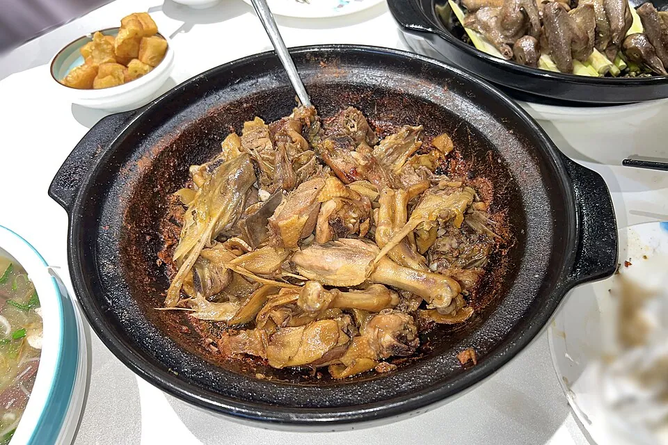
泉州式姜母鸭成品
作者：N509FZ · 原文件与来源 · CC BY-SA 4.0
缩小至不超过1000×800像素，转为WebP；页面按容器裁切显示
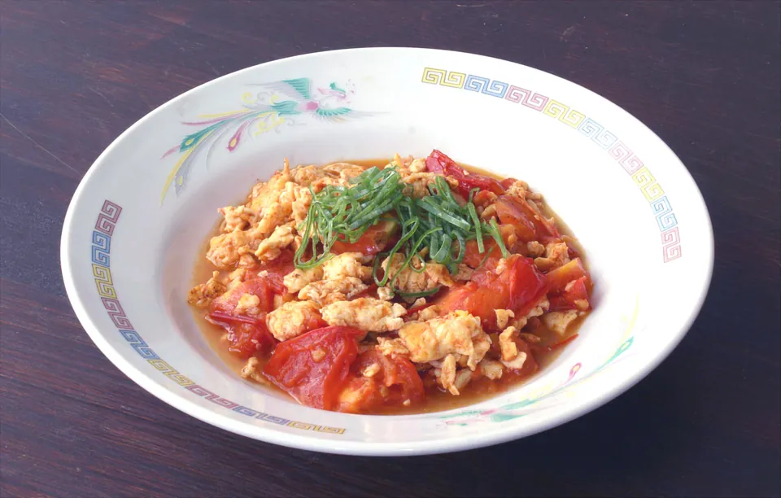
番茄炒蛋成品
作者：三島堂 · 原文件与来源 · CC BY-SA 4.0
缩小至不超过1000×800像素，转为WebP；页面按容器裁切显示
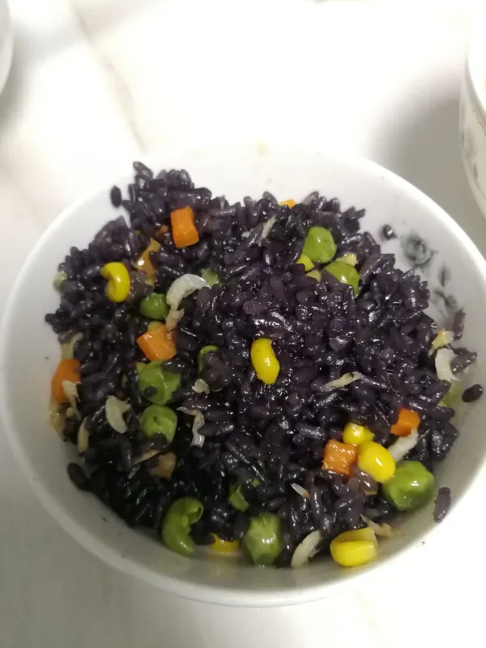
乌米饭成品
作者：泠风寒声 · 原文件与来源 · CC BY-SA 4.0
缩小至不超过1000×800像素，转为WebP；页面按容器裁切显示
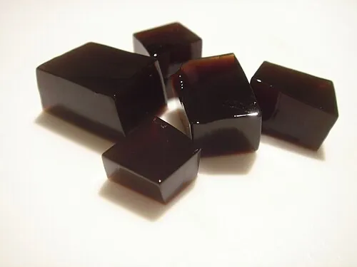
仙草冻食材；非带配料的烧仙草成品
作者：Sjschen · 原文件与来源 · CC BY-SA 4.0
缩小至不超过1000×800像素，转为WebP；页面按容器裁切显示
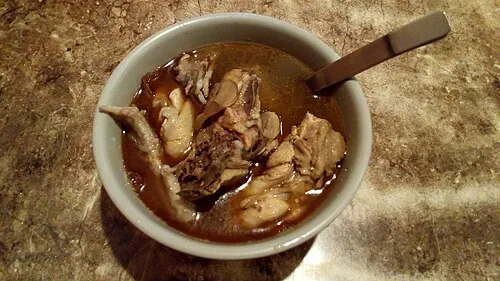
麻油鸡成品
作者：Rockhsp · 原文件与来源 · CC BY-SA 4.0
缩小至不超过1000×800像素，转为WebP；页面按容器裁切显示
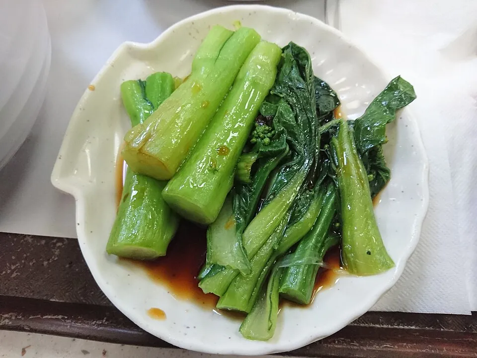
豉油菜心成品；摆盘与家常做法可能不同
作者：Ceeseven · 原文件与来源 · CC BY-SA 4.0
缩小至不超过1000×800像素，转为WebP；页面按容器裁切显示
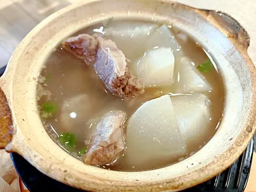
白萝卜牛腩成品；清汤版本与家常调味可能不同
作者：Ceeseven · 原文件与来源 · CC BY-SA 4.0
缩小至不超过1000×800像素，转为WebP；页面按容器裁切显示
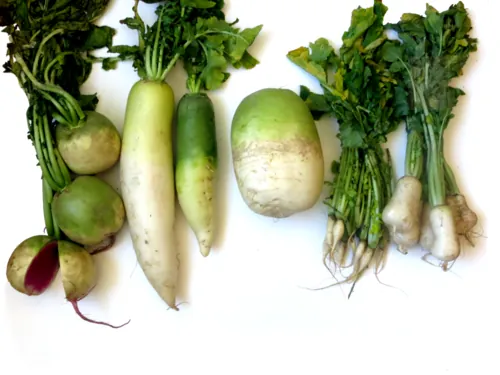
白萝卜品种实拍对照；仅食材参考，非菜品成品
作者：KimYunmi · 原文件与来源 · CC BY-SA 4.0
缩小至不超过1000×800像素，转为WebP；页面按容器裁切显示
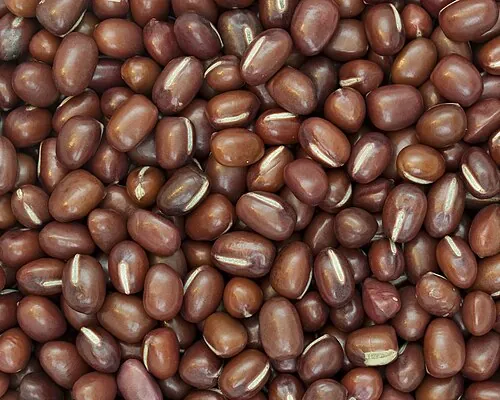
赤小豆干豆实拍；非饮品或米饭成品
作者：Sanjay Acharya · 原文件与来源 · CC BY-SA 3.0
缩小至不超过1000×800像素，转为WebP；页面按容器裁切显示
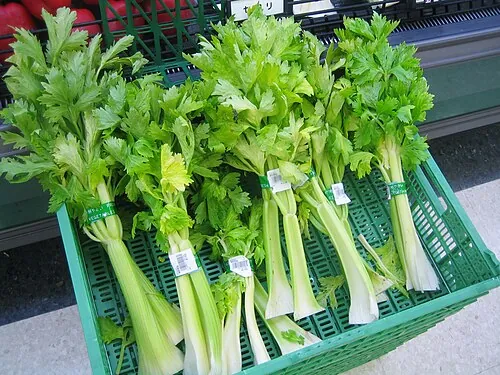
芹菜食材实拍；非成品
作者：Lombroso · 原文件与来源 · Public domain
缩小至不超过1000×800像素，转为WebP；页面按容器裁切显示
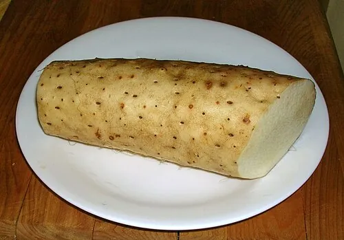
山药食材实拍；非粥或排骨汤成品
作者：Ish ishwar（原拍）；Ubcule（色彩修订） · 原文件与来源 · Public domain
缩小至不超过1000×800像素，转为WebP；页面按容器裁切显示
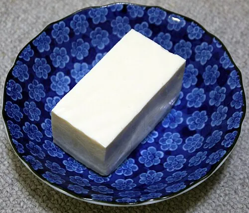
嫩豆腐食材实拍；非成品
作者：DryPot · 原文件与来源 · CC BY-SA 3.0
缩小至不超过1000×800像素，转为WebP；页面按容器裁切显示
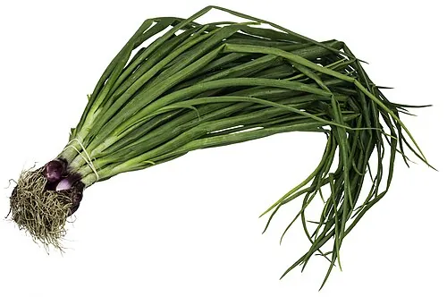
嫩葱食材实拍；非五辛盘成品
作者：Evan-Amos · 原文件与来源 · Public domain
缩小至不超过1000×800像素，转为WebP；页面按容器裁切显示
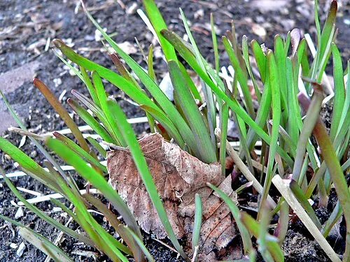
韭菜食材实拍；非炒菜成品
作者：sakura from between places · 原文件与来源 · CC BY 2.0
缩小至不超过1000×800像素，转为WebP；页面按容器裁切显示
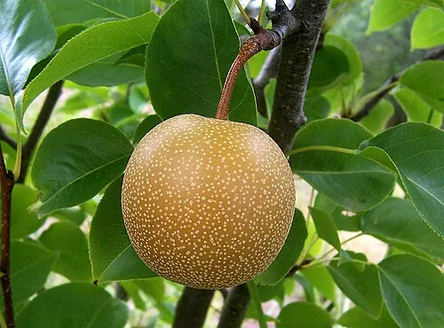
亚洲梨食材实拍；品种未限定为雪梨，非甜汤成品
作者：Fir0002 · 原文件与来源 · CC BY-SA 3.0
缩小至不超过1000×800像素，转为WebP；页面按容器裁切显示
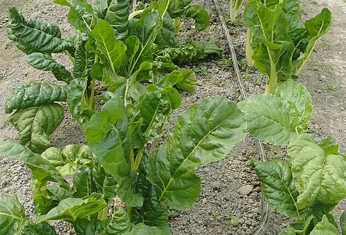
菠菜食材实拍；非汤或蒜蓉菠菜成品
作者：Krish Dulal · 原文件与来源 · CC BY-SA 3.0
缩小至不超过1000×800像素，转为WebP；页面按容器裁切显示
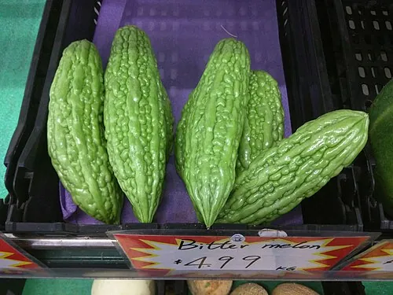
苦瓜食材实拍；非凉拌、汤或煎蛋成品
作者：Maksym Kozlenko · 原文件与来源 · CC BY-SA 4.0
缩小至不超过1000×800像素，转为WebP；页面按容器裁切显示
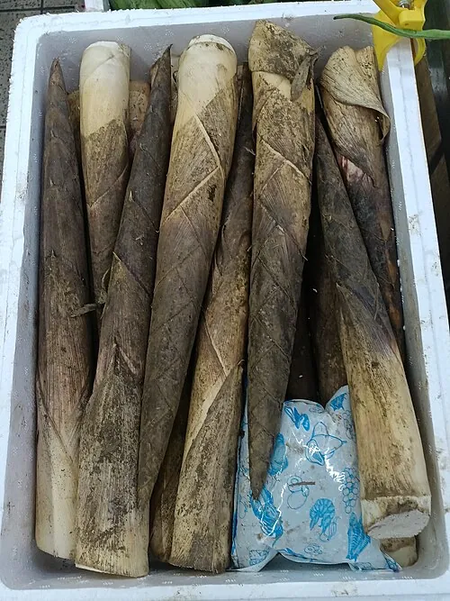
竹笋食材实拍；非冬笋炒腊肉成品
作者：Fumikas Sagisavas · 原文件与来源 · CC0
缩小至不超过1000×800像素，转为WebP；页面按容器裁切显示
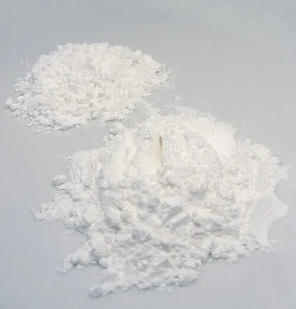
糯米粉与粘米粉包装实拍；非汤圆或糍粑成品
作者：FotoosVanRobin · 原文件与来源 · CC BY-SA 2.0
缩小至不超过1000×800像素，转为WebP；页面按容器裁切显示
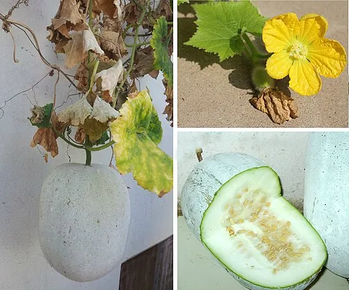
冬瓜食材实拍；非汤品成品
作者：Akshay.paramatmuni1987 (left photo), মৌচুমী (bottom right photo), Zhangzhugang (upper right photo), montage by User:RoRo · 原文件与来源 · CC BY-SA 3.0
缩小至不超过1000×800像素，转为WebP；页面按容器裁切显示
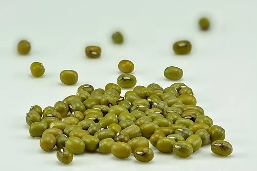
绿豆食材实拍；非汤品成品
作者：Ivar Leidus · 原文件与来源 · CC BY-SA 4.0
缩小至不超过1000×800像素，转为WebP；页面按容器裁切显示
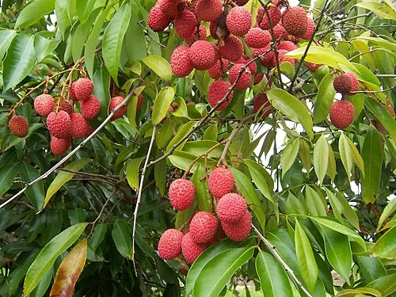
荔枝食材实拍；非银耳羹成品
作者：B.navez · 原文件与来源 · CC BY-SA 3.0
缩小至不超过1000×800像素，转为WebP；页面按容器裁切显示
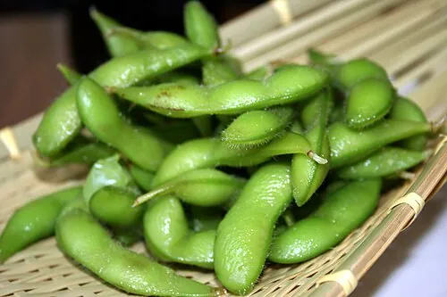
毛豆实拍；非姜汁毛豆成品
作者：Tammy Green (aka Zesmerelda) from Chicago Upscale Dining + Lounge Republic Pan-Asian Restaurant [1] in Ontario & Rush Street, Chicago, Illinois 60611 · 原文件与来源 · CC BY-SA 2.0
缩小至不超过1000×800像素，转为WebP；页面按容器裁切显示
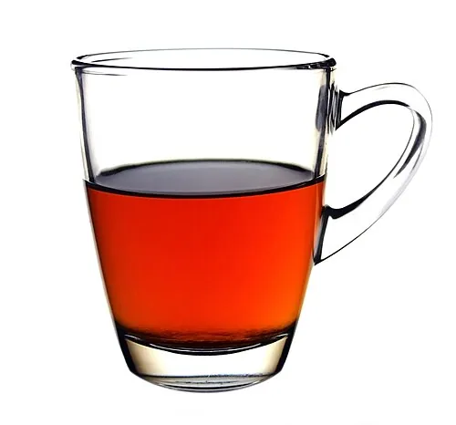
红茶茶汤实拍；不能仅凭图证明白露采摘
作者：AntanO · 原文件与来源 · CC BY-SA 4.0
缩小至不超过1000×800像素，转为WebP；页面按容器裁切显示
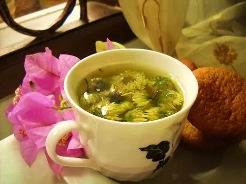
菊花茶参考；未包含枸杞，非本菜成品
作者：Taman Renyah · 原文件与来源 · CC BY-SA 3.0
缩小至不超过1000×800像素，转为WebP；页面按容器裁切显示
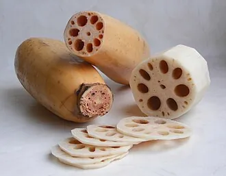
莲藕食材实拍；非汤、炒菜或糯米藕成品
作者：FotoosRobin · 原文件与来源 · CC BY-SA 2.0
缩小至不超过1000×800像素，转为WebP；页面按容器裁切显示
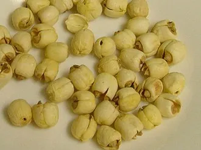
干莲子食材实拍；非银耳羹、桂圆羹或鸭汤成品
作者：Sjschen at English Wikipedia · 原文件与来源 · Public domain
缩小至不超过1000×800像素，转为WebP；页面按容器裁切显示
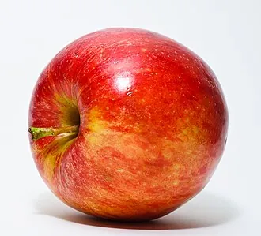
苹果食材实拍；非苹果银耳汤成品
作者：Abhijit Tembhekar from Mumbai, India · 原文件与来源 · CC BY 2.0
缩小至不超过1000×800像素，转为WebP；页面按容器裁切显示
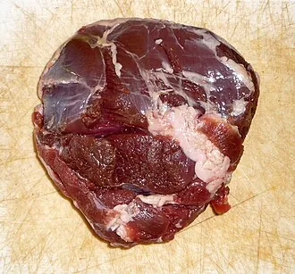
羊肉食材实拍；非葱爆羊肉、涮羊肉或羊肉汤成品
作者：Petr Sevela · 原文件与来源 · CC BY-SA 3.0
缩小至不超过1000×800像素，转为WebP；页面按容器裁切显示
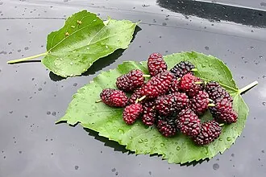
桑葚果实实拍；非果盘成品
作者：Andre Abrahami · 原文件与来源 · CC BY-SA 2.5
缩小至不超过1000×800像素，转为WebP；页面按容器裁切显示
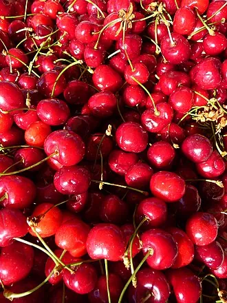
樱桃食材实拍；非果盘成品
作者：4028mdk09 · 原文件与来源 · CC BY-SA 3.0
缩小至不超过1000×800像素，转为WebP；页面按容器裁切显示
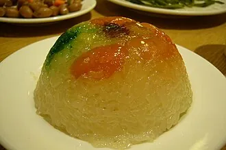
八宝饭成品
作者：kawanet · 原文件与来源 · CC BY 2.0
缩小至不超过1000×800像素，转为WebP；页面按容器裁切显示
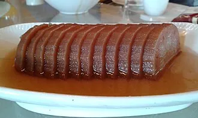
糯米藕成品；桂花或蜂蜜调味细节不能由照片确认
作者：Pauloleong2002 · 原文件与来源 · CC BY-SA 4.0
缩小至不超过1000×800像素，转为WebP；页面按容器裁切显示
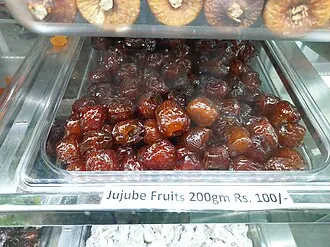
干红枣食材实拍；非乌鸡汤或桂圆茶成品
作者：Vis M · 原文件与来源 · CC BY-SA 4.0
缩小至不超过1000×800像素，转为WebP；页面按容器裁切显示
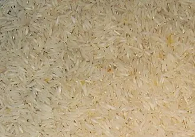
稻米原粮实拍；非米饭或粥成品
作者：Vadakkan · 原文件与来源 · CC BY-SA 3.0
缩小至不超过1000×800像素，转为WebP；页面按容器裁切显示
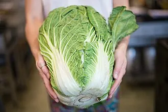
大白菜食材实拍；非饺子、炖豆腐或炒年糕成品
作者：Sous Chef · 原文件与来源 · CC BY 2.0
缩小至不超过1000×800像素，转为WebP；页面按容器裁切显示
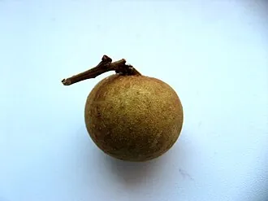
鲜龙眼实拍；与桂圆干原料状态不同，非羹或茶成品
作者：Dezidor · 原文件与来源 · CC BY 3.0
缩小至不超过1000×800像素，转为WebP；页面按容器裁切显示
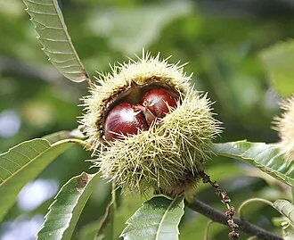
食用栗子（欧洲栗）实拍参考；与板栗品种不同，非鸡汤或烧鸡成品
作者：Fir0002/Flagstaffotos · 原文件与来源 · GFDL 1.2
缩小至不超过1000×800像素，转为WebP；页面按容器裁切显示
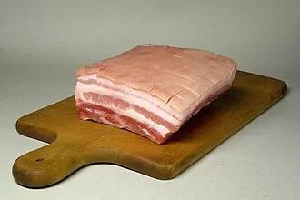
猪肉（五花部位）参考；非肉糜、馄饨、饺子或本菜成品
作者：Rainer Zenz · 原文件与来源 · CC BY-SA 3.0
缩小至不超过1000×800像素，转为WebP；页面按容器裁切显示
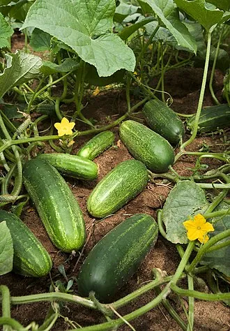
黄瓜食材实拍；非木耳凉拌或凉面成品
作者：Stephen Ausmus, USDA ARS · 原文件与来源 · Public domain
缩小至不超过1000×800像素，转为WebP；页面按容器裁切显示
西瓜实拍；不能证明冰镇状态，非果盘成品
作者：USDA photo by Scott Bauer · 原文件与来源 · Public domain
缩小至不超过1000×800像素，转为WebP；页面按容器裁切显示
鸡蛋食材实拍；非煎蛋或白水蛋成品
作者：Krzysztof Golik · 原文件与来源 · CC BY-SA 4.0
缩小至不超过1000×800像素，转为WebP；页面按容器裁切显示
生鸡肉食材实拍；非菜品成品，也不代表特定鸡龄
作者：Bhaskaranaidu · 原文件与来源 · CC BY-SA 3.0
缩小至不超过1000×800像素，转为WebP；页面按容器裁切显示
巴沙鱼头实拍参考；非鱼片或春菜鱼汤成品
作者：Pradeep717 · 原文件与来源 · CC BY-SA 4.0
缩小至不超过1000×800像素，转为WebP；页面按容器裁切显示
红薯块根食材实拍；非红薯粥成品
作者：Llez · 原文件与来源 · CC BY-SA 3.0
缩小至不超过1000×800像素，转为WebP；页面按容器裁切显示
年糕实拍参考；非消寒糕组合成品
作者：ProjectManhattan · 原文件与来源 · CC BY-SA 3.0
缩小至不超过1000×800像素，转为WebP；页面按容器裁切显示
芦笋食材实拍；非百合炒芦笋成品
作者：Evan-Amos · 原文件与来源 · CC BY-SA 3.0
缩小至不超过1000×800像素，转为WebP；页面按容器裁切显示
苦苣（菊苣）植株实拍；非凉拌成品
作者：Montréalais · 原文件与来源 · CC BY-SA 3.0
缩小至不超过1000×800像素，转为WebP；页面按容器裁切显示
中国圆田螺实拍参考；非酱爆成品
作者：Peterwchen · 原文件与来源 · CC BY-SA 4.0
缩小至不超过1000×800像素，转为WebP；页面按容器裁切显示
芋头块茎食材实拍；非蒸排骨成品
缩小至不超过1000×800像素，转为WebP；页面按容器裁切显示
青梅（梅果）食材实拍；非煮青梅成品
缩小至不超过1000×800像素，转为WebP；页面按容器裁切显示
香干食材实拍；非马兰头拌香干成品
作者：Tan S.L. · 原文件与来源 · CC BY-SA 3.0
缩小至不超过1000×800像素，转为WebP；页面按容器裁切显示
三色苋（红苋菜类）植株实拍；非采摘菜叶或蒜蓉苋菜成品
作者：Tangopaso · 原文件与来源 · Public domain
缩小至不超过1000×800像素，转为WebP；页面按容器裁切显示
红烧肉成品；五花肉块红烧收汁，照片为湘菜馆摆盘，配菜与家常版本不同。
作者：Liuxingy · 原文件与来源 · CC BY-SA 4.0
缩放、转WebP；页面可按容器裁切
清蒸大闸蟹拆开后的成品近景；来源明确为蒸母蟹，可见蟹黄、蟹肉与蟹壳。
作者：Jpatokal · 原文件与来源 · CC BY-SA 4.0
缩放、转WebP；页面可按容器裁切
按本食谱切块即食步骤匹配西瓜鲜食成品；照片不证明采收节气、产地或冰镇状态。
作者：USDA photo by Scott Bauer · 原文件与来源 · Public domain
缩放、转WebP；页面可按容器裁切
南瓜小米粥成品；来源明确标注Millet and pumpkin congee。已裁切至中央粥碗，排除旁侧其他菜。
作者：LANENWM Meso Amermbalin · 原文件与来源 · CC0
从已下载500px实拍裁切中央粥碗（235,70至425,220），转WebP；衍生物沿用原许可。
猪肉白菜水饺成品；作者明确说明猪肉与大白菜馅，煮制白皮、同配方可用于冬至饺子。
作者：NeoBatfreak · 原文件与来源 · CC BY-SA 4.0
缩放、转WebP；页面可按容器裁切
涮羊肉就餐成品实拍；清汤铜锅、羊肉片和蘸料同框，展示涮煮过程，不把孤立生肉当成成品。
作者：N509FZ · 原文件与来源 · CC BY-SA 4.0
缩放、转WebP；页面可按容器裁切
赤豆糯米饭成品；照片为日本赤饭，同为小豆与糯米蒸饭，未添加本食谱可选红糖。
作者：Lombroso · 原文件与来源 · CC BY-SA 4.0
缩放、转WebP；页面可按容器裁切
猪肉馅清汤馄饨成品；作者说明猪肉馅与清汤，照片配芥菜叶，汤面点缀与本食谱紫菜葱花不同。
作者：Sumit Surai · 原文件与来源 · CC BY-SA 4.0
缩放、转WebP；页面可按容器裁切
腊味糯米饭成品；可见糯米、腊肠切片、肉丁、花生与葱花，做法对应熟糯米配腊味。
作者：Gloumetcadao · 原文件与来源 · CC BY-SA 3.0
缩放、转WebP；页面可按容器裁切
黄焖鸡成品套餐；鸡块、香菇片与青椒可见，配米饭。与本食谱主菜相符，套餐米饭不属于配料新增。
作者：汮汐 · 原文件与来源 · CC BY-SA 4.0
缩放、转WebP；页面可按容器裁切
蒜蓉菠菜成品实拍；来源标注Garlic spinach，画面可见菠菜叶与蒜片。
作者：BrokenSphere · 原文件与来源 · CC BY-SA 3.0
按来源缩略图尺寸下载，转为WebP；页面按容器裁切显示
芝麻汤圆成品实拍；来源说明明确黑芝麻馅，画面为煮熟白皮汤圆。
按来源缩略图尺寸下载，转为WebP；页面按容器裁切显示
龙井虾仁成品实拍，对应虾仁与龙井茶汤配方；照片不能证明明前采茶时点。
作者：猫猫的日记本 · 原文件与来源 · CC BY-SA 4.0
按来源缩略图尺寸下载，转为WebP；页面按容器裁切显示
冰糖炖梨同菜成品示意；照片含少量枸杞点缀，本食谱配料为雪梨、冰糖和水，按食材清单判断配料。
作者：Fumikas Sagisavas · 原文件与来源 · CC0
下载250像素宽缩略图并转为WebP；页面按容器裁切显示
清蒸鲈鱼成品实拍，画面为整条鲈鱼、葱姜与豉油汁；春秋两个节气的同主料、同做法配方共用。
作者：Walter Grassroot · 原文件与来源 · CC BY-SA 3.0
下载330像素宽缩略图并转为WebP；页面按容器裁切显示
前景绿豆汤成品；裁切排除后景银耳甜汤；与绿豆、糖、水的主配料相符，未将其复用为绿豆百合汤
作者：bryan... from Taipei, Taiwan · 原文件与来源 · CC BY-SA 2.0
裁取前景绿豆汤，排除后景银耳汤；转为WebP；页面按容器裁切显示
麻酱黄瓜丝凉面成品；与鲜面、黄瓜丝、麻酱调料相符；不复用为含胡萝卜丝的夏至过水面
作者：N509FZ · 原文件与来源 · CC BY-SA 4.0
转为WebP；页面按容器裁切显示
响油鳝糊成品；来源明确为热油姜丝鳝条，可见鳝条、姜丝及蒜末；与去骨鳝片响油做法相符
作者：N509FZ · 原文件与来源 · CC BY-SA 4.0
转为WebP；页面按容器裁切显示
苦瓜煎蛋成品；来源明确为bitter melon omelette，实图可见苦瓜片与煎蛋饼，红椒为装饰
缩小至250像素宽，转为WebP；页面按容器裁切显示
栗子图片 Fir0002/Flagstaffotos 按 GFDL 1.2 only 提供，无不变章节及封面文字。随站许可证全文。


.jpg){kind=link}
.jpg){kind=link}
.JPG){kind=link}

.jpg){kind=link}
.jpg){kind=link}
_at_Yipin_Xiangqing_Restaurant,_Beijing_(20240908174515).jpg){kind=link}


.jpg){kind=link}
.jpg#Licensing){kind=link}
.JPG){kind=link}


.jpg){kind=link}


.jpg){kind=link}


_05.jpg){kind=link}


_(Pork_and_napa_cabbage).jpg){kind=link}
.jpg){kind=link}
.jpg){kind=link}


.jpg){kind=link}
.jpg){kind=link}
.jpg){kind=link}
.jpg){kind=link}